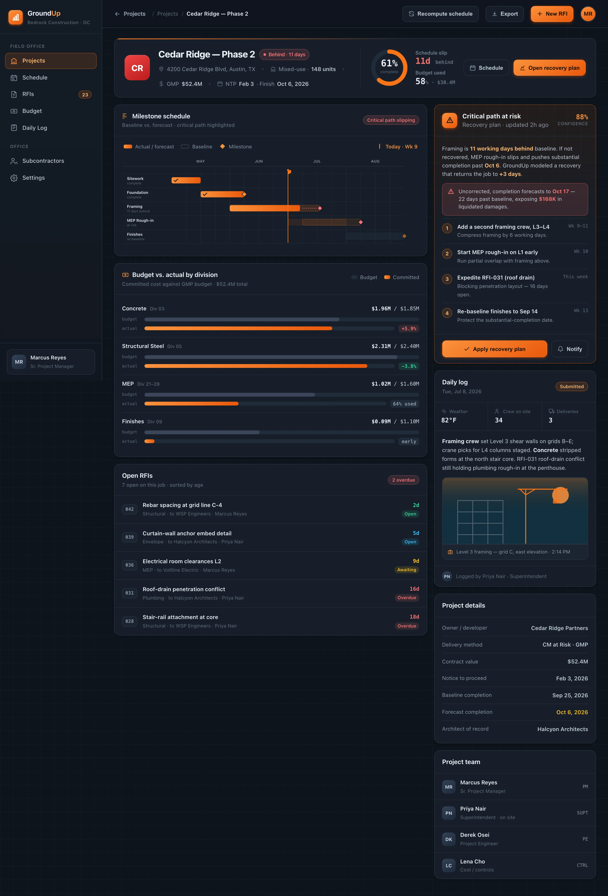

Track
Schedule, milestones, RFIs, submittals, budget and daily logs from every active job roll up into one live command centre.
GroundUp is the command centre for a general contractor's portfolio — schedule gantts, RFIs, submittals and budget-vs-actual in one place, with the critical-path recovery mapped the moment a job starts to slip.
By the time a job "feels late", the delay is already weeks deep. GroundUp watches the leaks in real time — so every lost day has a cause your team can act on.
Unanswered RFIs quietly hold up rough-in and inspections — the single most common driver of field delay.
Crews ramping slower than planned and out-of-sequence trades push the critical path a day at a time.
Change orders and division overruns that only surface at month-end, long after the money's committed.
Daily logs, weather days and delivery slips that live in a superintendent's notebook, not the schedule.
When Cedar Ridge went 11 days behind, GroundUp didn't just flag it — it decomposed exactly where the days went, so recovery targets the real cause.
GroundUp closes the loop from what happened on site this morning to the schedule and budget forecast tonight — with the recovery plan already drafted.
Schedule, milestones, RFIs, submittals, budget and daily logs from every active job roll up into one live command centre.
The moment the critical path slips or a division runs hot, the job surfaces to the top — with the days and dollars quantified.
A sequenced recovery plan lands with crew moves, resequencing and re-baselines — the exact steps to pull the date back.
BuildspaceLabs built the MVP front end: a Project Command board for the whole book, and a per-project file for the PM running the recovery.
A schedule gantt for the driving job sits above active-project KPIs and a worst-first table — so the jobs that need a call are always on top.

A milestone gantt with baseline-vs-forecast, budget-vs-actual by division, open RFIs by age and today's daily log — capped by a critical-path recovery plan.

Schedule, RFIs, submittals, budget and the field log consolidated into one command centre — nothing stranded in a spreadsheet or a text thread.
Phase and milestone gantts with % complete, a live today line and baseline-vs-forecast on every job.
Every RFI and submittal by age, ball-in-court and schedule impact — so nothing quietly goes overdue.
Committed cost against the GMP budget by CSI division, with variance flagged the day it moves.
When a job slips, a sequenced recovery plan with crew moves and re-baselines, and the days it buys back.
Weather, crew counts, deliveries and progress photos logged from site and tied straight to the schedule.
One board across every active job — KPIs, schedule status and budget variance for the whole book at a glance.
Reporting nobody updates is worthless. GroundUp pulls the schedule, the budget and the field log into one surface — so the forecast reflects what really happened on site today.
Delivered as a production-quality MVP in an eight-week engagement.
We build AI-native products like GroundUp. Tell us how your jobs run today, and we'll show you what a single command centre for schedule, RFIs and budget looks like on your projects.